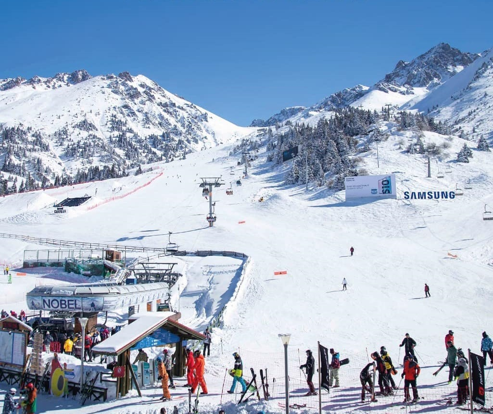
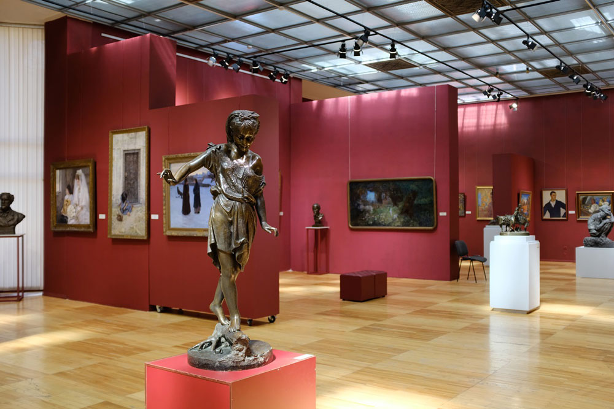

The resort was founded in 1954. Since the mid-50s, Shymbulak was a training base for Soviet skiers, with USSR and Kazakhstan championships held on its slopes. Skiers used to compete on Shymbulak every year, at the beginning of February, with the Alexandra Artemenko Prize at stake. Alexandra Artemenko was an 11-time champion of the USSR, master of sports, participant in the 1956 Olympic Games. Anyone who has ever skied or at least watched athletes training knows well how much time and effort an athlete spends to climb up. The pioneers had to climb up a mountain for three hours, but skiing down took only 15 minutes. Then mechanisms were invented to help athletes to climb up.

The rich, diverse, priceless collection gives a vivid idea of the artistic culture of Kazakhstan, the countries of Europe and Asia, the masters of past eras and the present. The number of exhibits of the main fund of the museum is more than 25,000 units. The museum has several research centers: fine arts of Kazakhstan, decorative and applied arts of Kazakhstan, classical foreign art, foreign art of modern times, funds, restoration, exhibitions and expositions, management and external relations, scientific expertise, excursion services, information and publishing work